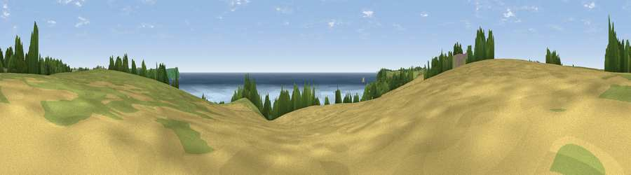

Viewpoint near Portloe
#6444 in England · top 14% of its area beats it · near PortloeWhere it is
The exact computed spot (SW 94638 40375). Click the marker for map links.
The view, rendered

A 360° render of this exact spot computed from the terrain model, tree cover and land cover — summer colours, afternoon light, calibrated against photographs of famous viewpoints. Real trees, hedges and buildings will differ in detail.
The panorama
Grey silhouette: terrain skyline in each direction (720 bearings, Earth curvature and refraction included). Dashed green: skyline with trees (+15 m) and buildings (+8 m) as obstacles. Blue strip: how far the ground is visible on each bearing.
Where the view opens
Wedge length = distance to the farthest visible ground on that bearing (vegetation-aware). Rings at 10, 25 and 50 km.
What fills the view
54% water · 27% cropland · 16% grassland · 3% woodland
Angular shares of the visible panorama (visual magnitude), not map area. Landscape diversity 0.47 (0–1 Shannon).
Key numbers
More beautiful places nearby
The staircase of upgrades: each row has a higher view potential than everything closer. Driving times are estimates from straight-line distance, calibrated against real road routing — check an actual route before setting out.
| Place | Direction | Drive | Score |
|---|---|---|---|
| Viewpoint near Portloe | SW · 2 km | ~5 min | 69.4 |
| Viewpoint near Portloe | NE · 2 km | ~5 min | 74.4 |
| Viewpoint near Gorran Haven | ENE · 7 km | ~14 min | 77.0 |
| Viewpoint near Foxhole | N · 14 km | ~25 min | 84.3 |
| Viewpoint near Foxhole | N · 14 km | ~26 min | 86.4 |
| Viewpoint near Stenalees | NNE · 18 km | ~31 min | 88.0 |
| Viewpoint near Crackington Haven | NNE · 57 km | ~79 min | 88.1 |
| Viewpoint near Combe Martin | NNE · 126 km | ~150 min | 88.9 |
50.22763, -4.88061 · source: screening · position refined by local search. Computed location — check access rights before visiting.